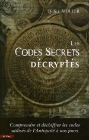
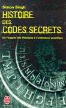
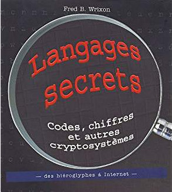

Découvrir la cryptanalyse
Pour découvrir la cryptanalyse, nous vous proposons trois documents introductifs :
Par ailleurs, pour poursuivre votre découverte, nous vous proposons les sites suivants :
Voici deux jeux pour s'initier en ligne à la cryptographie :
Nous vous conseillons également les ouvrages suivants :
-

"Les codes secrets décryptés" par Didier Müller aux éditions City-Editions
(ISBN : 2-35288-041-6) -

"Histoire des codes secrets" par Simon Singh aux éditions Livre de poche
(ISBN : 978-2-253-15097-8) -

"Langages secrets" par Fred B.Wrixon aux éditions Könemann
(ISBN : 3-8290-3889-5)
Voici des sites de ressources de cryptographie en français :
Deux excellents sites publiant des articles pour différents niveaux :
- Informatique : Interstices
- Mathématiques : Images des mathématiques
Voici quelques ressources en anglais :
Découvrez la machine Enigma
Pour apprendre l'histoire de la machine Enigma, vous pouvez regarder la vidéo de la chaîne Science4all ou consulter les slides de l'exposé présenté ici. Un article d'Images des maths présente la cryptanalyse d'Enigma par trois mathématiciens polonais.
S'entraîner
Deux amis de 14 ans passionnés de cryptologie, d'informatique et candidats du concours ont créé le site Club Alkindi pour s'entraîner.
Essayez !
Et bien sûr nous vous invitons à refaire les épreuves du premier tour des éditions précédentes sur epreuve.concours-alkindi.fr et à consulter les solutions.